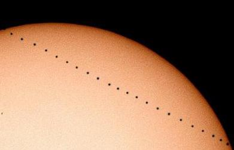
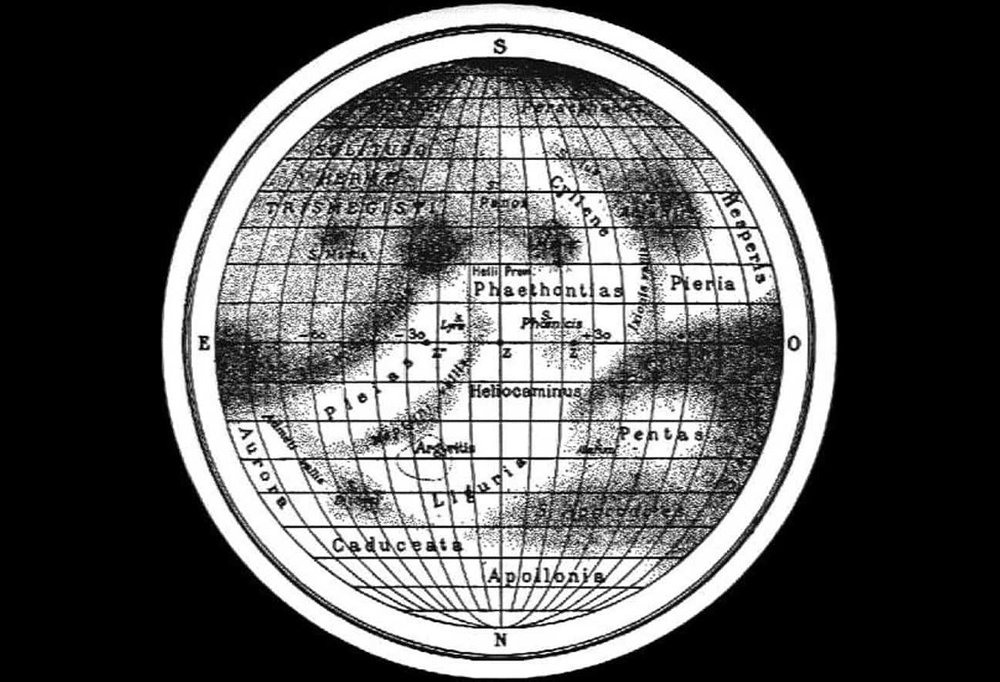

История изучения планеты Меркурий
Описание Меркурия не обходится без истории исследований. Эта планета доступна для наблюдения без использования приборов, поэтому фигурирует в мифах и древних легендах. Первые записи обнаружены в табличке Мул Апин, выступающей астрономическими и астрологическими вавилонскими записями.
Эти наблюдения сделаны в 14-м веке до н.э. и рассказывают о «пляшущей планете», потому что Меркурий перемещается быстрее всего. В Древней Греции его именовали Стилбон (переводится как «блеск»). Это был посланник Олимпа. Потом римляне переняли эту идею и дали современное наименование в честь своего пантеона.
Птолемей в работах несколько раз упоминал, что планеты способны проходить перед Солнцем. Но он не записывал в примеры Меркурий и Венеру, потому что считал их слишком маленькими и незаметными.
Китайцы именовали его Чэнь Синь («Часовая звезда») и связывали с водой и северной направленностью. Причем в азиатской культуре до сих пор сохранилось такое представление о планете, которую даже записывают как 5-й элемент.
Для германских племен здесь наблюдалась связь с богом Одином. Майя видели четырех сов, две из которых отвечали за утро, а две других за вечер.
О геоцентрическом орбитальном пути еще в 11 веке написал один из исламских астрономов. В 12-м веке Ибн Баджья отметил транзит двух крошечных темных тел перед Солнцем. Скорее всего он видел Венеру и Меркурий.

Индийский астроном Кералы Сомаяджи в 15 веке создал частичную гелиоцентрическую модель, где Меркурий совершал обороты вокруг Солнца.
Первый обзор в телескоп приходится на 17 век. Это сделал Галилео Галилей. Он тогда внимательно изучал фазы Венеры. Но его аппарату не хватило мощности, поэтому Меркурий остался без внимания. А вот транзит отметил Пьер Гассенди в 1631 году.
Орбитальные фазы в 1639 году заметил Джованни Зупи. Это было важное наблюдение, потому что подтвердило вращение вокруг звезды и правильность гелиоцентрической модели.
Более точные наблюдения в 1880-х гг. предоставил Джованни Скиапарелли. Он считал, что орбитальный путь занимает 88 дней. В 1934 году Юджиос Антониади создал детальную карту поверхности Меркурия.

Первый радиолокационный сигнал удалось отбить советским ученым в 1962 году. Через три года американцы повторили эксперимент и закрепили осевой оборот в 59 дней. Обычные оптические наблюдения не смогли дать новых сведений, но интерферометры открыли химические и физические характеристики подповерхностных слоев.
Первое глубокое изучение поверхностных особенностей провели в 2000 году обсерваторией Маунт-Вильсон. Большую часть карты составили при помощи радиолокационного телескопа Аресибо, где расширение достигает 5 км.